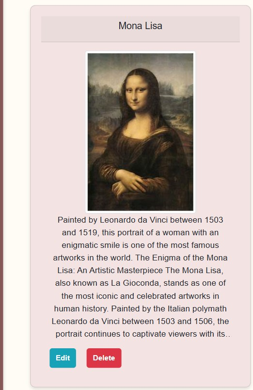

For my previous personal project, I built a portfolio/blog application. My approach was to initially focus entirely on the backend of the application.
I implemented user authentication and profile management. Additionally, I developed CRUD endpoints to manage the various projects that users upload. This included creating new projects, managing existing ones, updating project details, and deleting posts. To achieve this, I designed a database model and used MySQL to interact with the database.
After completing the backend, I worked on the frontend, where I designed and built various forms. I also developed functionality to add images to articles. The articles are published in a blog-style layout, featuring titles and dates.
For the backend, I used C# in an object-oriented manner, and the frontend was developed using HTML and CSS. The application is divided into three layers: the Business Logic Layer (BLL), Data Access Layer (DAL), and Presentation Layer (PL). The PL is further divided into a Model, Controller, and View, where each component has a specific function.

In the final version of the application, portfolio and blog posts are closely connected: when clicking on a portfolio post, the user is redirected to the associated blog post. Additionally, visitors can post comments on blog posts, which can be deleted by the admin. I ultimately decided not to add a text editor with formatting options, except for the ability to add images. This will be considered for a future version of the application.
This project follows a three-layer architecture, meaning that the user interface, data storage/retrieval, and business logic are separated.
The Business Logic Layer (BLL) is the most critical part of the application and is often referred to as the "Core." The BLL is responsible for processing data from the Presentation Layer (PL) and preparing it before sending it back. Additionally, the BLL communicates with the Data Access Layer (DAL) to retrieve or modify data as needed.
Since the BLL forms the core of the application, the system cannot function without it.
It simplifies maintenance, as errors can be tracked more easily because each layer can be tested separately.
It enables reuse of layers across different applications.
In a team environment, this structure ensures that modifications can be made without impacting other parts of the application.